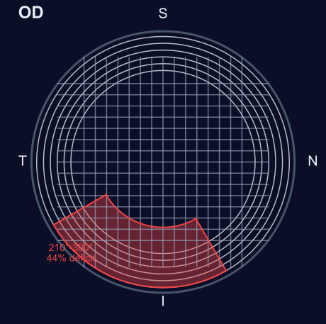
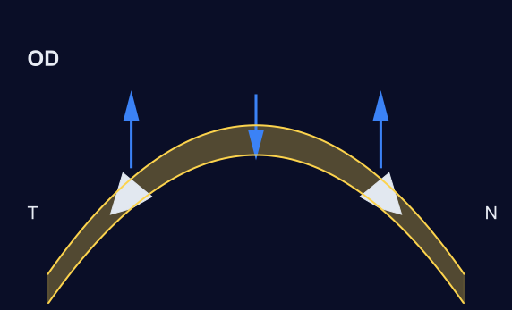
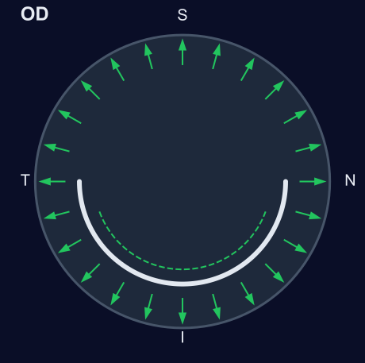
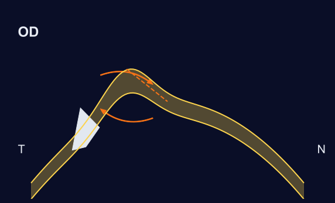
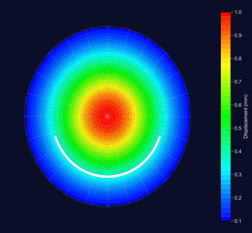

Da geometria óptica à engenharia de materiais:
como a física muda o planejamento do ICRS
Dois olhos idênticos no topógrafo. Resultados opostos na cirurgia.
Kmax = 52 D · Paqui = 480 μm
ICRS 160° / 250 μm
Kmax = 52 D · Paqui = 480 μm
ICRS 160° / 250 μm
Mesmo Kmax. Mesmo anel. O que falhou?

Mapa de fibras de colágeno (WAXS — Meek & Boote, 2004)
É um compósito de engenharia: fibras de colágeno rígidas embebidas numa matriz macia, como fibra de vidro.
O sector ínfero-temporal tem 44% menos fibras radiais.
A topografia mostra onde o problema está.
A biomecânica explica por quê.
Cada uma controlada por um parâmetro diferente do anel.

Lei das Espessuras (Barraquer, 1964) | Validação FEM (Kling & Marcos, 2013)
O anel atua como a estaca de uma tenda:
levanta a periferia → o centro aplana.
Espessura do anel → controla o aplanamento (ΔK)
Mais volume injetado no estroma = mais aplanamento central

O anel funciona como o aro de um barril:
contém a expansão e distribui a tensão.
Comprimento do arco → controla a regularização (ΔCil)
Arcos mais longos → distribuição de tensão mais uniforme

Anéis assimétricos geram um binário de forças
que roda e reposiciona o ápice do cone.
Assimetria do anel → controla o reposicionamento do ápice
Anel progressivo (fino→grosso) gera torque ativo ≠ 0
Pela primeira vez, o cirurgião escolhe O QUE quer fazer.
| Objetivo Clínico | Mecanismo | Controlo | Vetor |
|---|---|---|---|
| Aplanar (↓ K) | Volumétrico (Tenda) | Espessura | VR |
| Regularizar (↓ Cil) | Tensional (Barril) | Arco | VT |
| Recentrar ápice | Torsional (Chave) | Assimetria | Vτ |
Não é "qual anel usar" — é "qual efeito preciso"
As simulações mostram que a restrição mecânica pura
(sem volume) ENCURVA a córnea em vez de aplanar.
O aplanamento clínico vem do VOLUME, não da tensão.
Kling & Marcos, IOVS 2013
O mesmo anel produz efeitos diferentes dependendo da paquimetria.
| Paquimetria | Deslocamento médio | Risco |
|---|---|---|
| < 430 μm (fina) | 34,1 ± 1,0 μm | Supercorreção ⚠️ |
| 430–500 μm (média) | 29,3 ± 0,8 μm | Ideal ✓ |
| > 500 μm (espessa) | 28,5 ± 0,2 μm | Subcorreção |
Córneas finas amplificam +20% o efeito do anel.
Tratar dois olhos com a mesma paquimetria de forma idêntica é um erro mecânico.

Modelo de elementos finitos · FEBio 4.12 · Holzapfel-Gasser-Ogden (2000)
Não é teoria — é engenharia validada.
A topografia é o termómetro. A biomecânica é o diagnóstico.
Não trate a febre — trate a infeção.